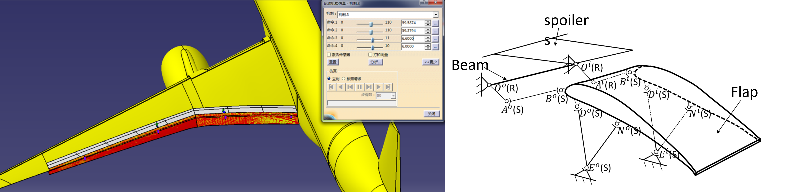

Design and Optimization of a Hinged Mechanism Guiding Flap to Three Positions

Abstract
The design of high-lift devices for commercial aircraft is a multidisciplinary problem. One of the difficulties is that the mechanism is difficult to accurately guide the flap to the aerodynamic design position. Therefore, the traditional high-lift device often adopts a complex mechanism, which brings the disadvantages of high structure weight and low reliability. The hinge flap composed of pure rods improves these disadvantages with a small loss of aerodynamic performance. In this paper, a new type of hinge flap mechanism that can meet the needs of three-position design is studied. First, the calculation method of the mechanism parameters and the kinematics simulation are introduced. The guiding position of the mechanism is basically consistent with the aerodynamic design position, and the maximum error is less than 0.1 mm. Then, the mechanism parameters are optimized, including two aspects. The fairing size and the tangential load of the mechanism are optimized for the support part, and the inboard and outboard rotary actuators are optimized to maintain a linear relationship as much as possible with a maximum deviation of no more than 0.058 deg. Finally, the aerodynamic performance of the takeoff and landing configurations guided by the mechanism is evaluated.
Read the published article ↗